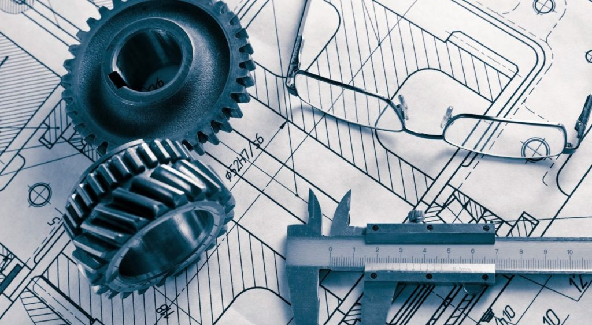
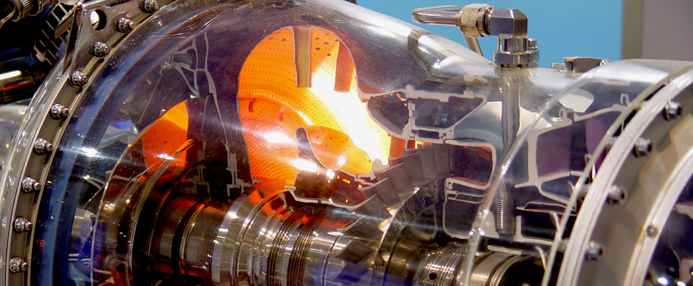

Engineering projects, student insights, and STEM highlights written by our team.

By Ayesha Jain

By Emma James

By Wolfie Nguyen
When I was young, my father often joked with me that “anything can fly—at least once.” And from a technical standpoint, you really can’t dispute this. The phrase “when pigs fly” is supposed to imply that something is highly unlikely or impossible. But if I shoot a swine out of a cannon off of a cliff, you can’t deny that it flew, at least for a little bit. Just disregard the fact that it never will again. But if you’d like to learn how you can make things that fly more than once, you’re reading the right thing. Here’s why you should consider aerospace engineering and how you can get into it.
Part 1: You won’t be homeless
I knew I wanted to design planes since I was 4. This came with the unfortunate side effect of people saying I might end up kinda poor.
Aeronautical engineering from the outside seems like a very niche field. As I grew up, my friends and family would always ask me, “aren’t the jobs you can apply for so limited?” The answer is no.
And since this nonprofit was founded on the idea of inspiring new engineers, I figured this would be an excellent place to plant the seeds of some future airplane junkies.
Aerospace is often seen as not worth it. It’s commonly cited as one of the most difficult engineering disciplines and is also alleged to have very few job opportunities; essentially it's rumoured to be a path that puts you through hell all to have no money by the end of it.
But don’t worry kids, you’ll get your moolah yet. It is not nearly as limited as people believe it to be. Here are the two main reasons:
Transferability
If you told me that Leonardo Da Vinci couldn’t draw a 2-dimensional sketch of a flower, I’d probably admit you to a mental hospital.
This relationship can also be observed in engineering. If you earned a degree that prepared you for designing machines that carry hundreds of people thousands of feet above the ground without killing them, I’m going to assume you have the skills to build something that has far less dire consequences. It’s very common for aerospace engineers to work outside of that sector. You will be fine regardless of the degree you get. I am fully prepared to take on other jobs. While my dream is to work at Boeing on their next airliner, I would be perfectly happy designing vending machines or whatever. They will hire you. You’re not screwed.
You will be learning the same skills as Mech E’s anyway, just with a few specific classes exclusive to AE. Mechanical and Aerospace engineers are often viewed as interchangeable.
Now of course this begs the question, “then why get a specific aerospace degree anyway?”
You’ll get the ladies
Please disregard the title of this paragraph. If you’re going into any kind of engineering, you probably won’t be getting any ladies.
The idea here is just that you may seem more appealing or impressive if your main goal is to work on air and spacecraft.
As mentioned before, if you choose to go into aerospace you will be learning largely the same things as a mechanical engineer would.
But to really put this into perspective, aerospace is literally viewed as mechanical engineering with a few more classes.
I would recommend aerospace engineering if you know you’re going for aerospace jobs just to give you that edge over the mech E’s that may be applying for your same position. But if it doesn’t work out, you can always go for mechanical jobs.
Part 2: How to become a nerd
Now you’re probably wondering how someone would go about applying for aerospace in college. Based on my experience, here are some tips:
START EARLY.
I cannot stress this enough. I’ve heard of people suddenly deciding they want to go into aerospace late into the stage of deciding on a major.
If you’re in middle school right now or even freshman year, try to get started with projects, extracurriculars, or online courses to learn relevant skills.
Most people applying to aerospace are people who are absolutely obsessed with the field.
If you want to compete with other applicants, I would strongly suggest displaying investment and passion early so you have a lot of source material to back up your application.
Don’t wait until junior year.
I started early (and I mean really early, I’m talking around 4 years old) and I’m still terrified for my college apps.
If you want a fast, good introduction to get yourself a solid understanding for the next few years check out A. Kermode’s Flight Without Formulae. It explains aeronautics without all that yucky math.
Do projects and showcase them
I personally believe they are the best way of differentiating yourself since pretty much everyone has amazing grades and STEM-based clubs/competitions.
I’ve been learning about airplanes for over a decade.
My father would always teach me about different models and why certain design choices were made.
This led to projects specifically centered around aircraft or aerospace components.
My first love was optimizing paper gliders with new designs.
Since then, I’ve designed applications for spheroid winglets, wrote training code for a gardening drone, and recently just finished designing an optimized wing configuration for solar aircraft.
I will be honest, these projects are carrying my application.
Fortunately, many top-tier and highly selective engineering colleges allow or encourage maker portfolio submissions.
Even if you don’t have a ton of knowledge on flight design, getting started isn’t super hard, and you will learn a lot more by building things than by reading a textbook or watching a random YouTube video.
LEARN TO WRITE AND GIVE PRESENTATIONS
It’s a strange thing to emphasize, but make sure you have solid humanities skills on top of your STEM ones.
Lab reports, technical overviews of projects, idea pitches etc... You gotta know how to present and sell.
Take AP Stats sophomore year
This was one of the best decisions I made.
It’s very, very useful for research and data explanation.
Taking it earlier helps you actually apply the knowledge during high school.
Connect projects to your interests
This makes things more enjoyable and unique.
For example, combine meteorology with aircraft design.
For me, it was humorous writing—I wrote a funny aeronautics textbook.
Part 3: I screwed up, please don’t be like me
Not getting ahead in math
If you’re going into aerospace, you must be strong in math.
I recommend taking calculus as early as sophomore year.
This allows time for advanced courses like multivariable calculus later.
Overloading junior year
Doing a NASA program during junior year was very stressful.
Balancing it with Calc and Physics made both harder.
Consider summer programs instead.
Lack of purpose in projects
Some projects were just for fun without real application.
Try to create 2–3 projects with clear, useful goals.
For example: drone automation or aerodynamic optimization.
Part 4: That’s all, folks. Have fun!
So that’s it. I’m still really young and inexperienced, so I didn’t have as much advice as you may have been hoping for. I hope you guys view aerospace differently, and maybe even join me in it. If you need help with projects or just want to chat, feel free to reach me: khanh.nguyen380655@gmail.com Good luck! And make sure to join UpDraft, a great place to kick off your engineering journey :)

By Sonu Rao
We respect your privacy. This site does not share your data with third parties. Any personal information is kept secure and used only to improve your experience and our programs.
By using this website, you agree to use it responsibly and respect all copyright laws. We reserve the right to update these terms at any time.